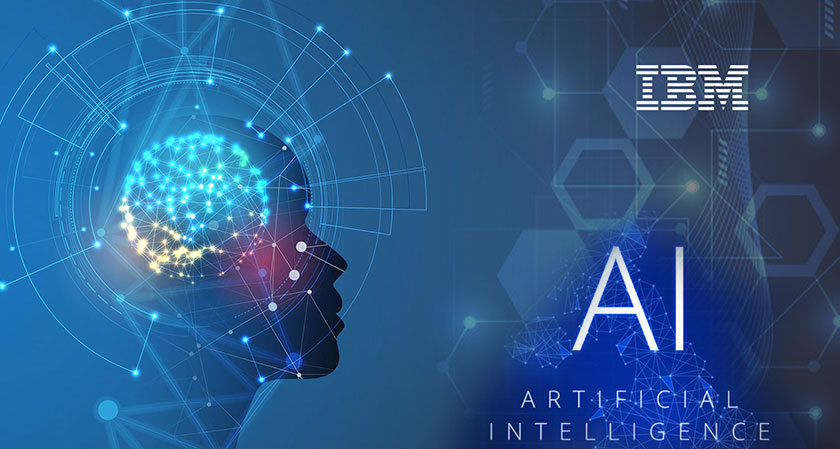
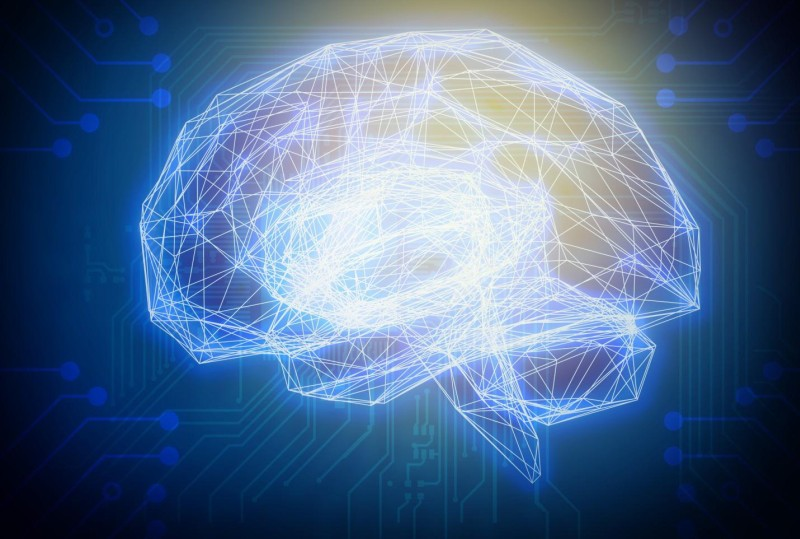

AI stands for Artifitial Intelligence, according to IBM.com, " It is the science and engineering of making intelligent machines, especially intelligent computer programs."
The whole AI group is divided into two parts: weak AI and strong AI.
Weak AI is AI trained and focused to perform specific tasks. Nowdays weak AI drives most of the systems that surrounds us.
Strong AI is different from weak AI, according to IBM.com, "Strong AI is a theoretical form of AI where a machine would have an intelligence equaled to humans; it would have a self-aware consciousness that has the ability to solve problems, learn, and plan for the future."
Until now, create a strong AI is still a impossible task, but we have AI that are close to strong AI now, for example ChatGPT and other "thinkable" AI made by Open AI.
Thank you, and hope we can have a better future.
 